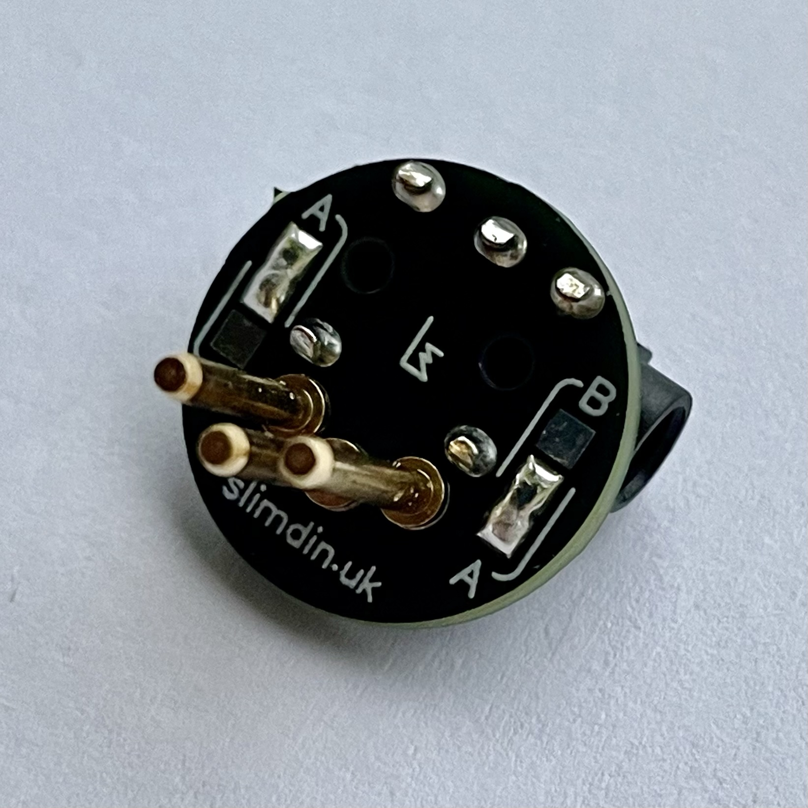
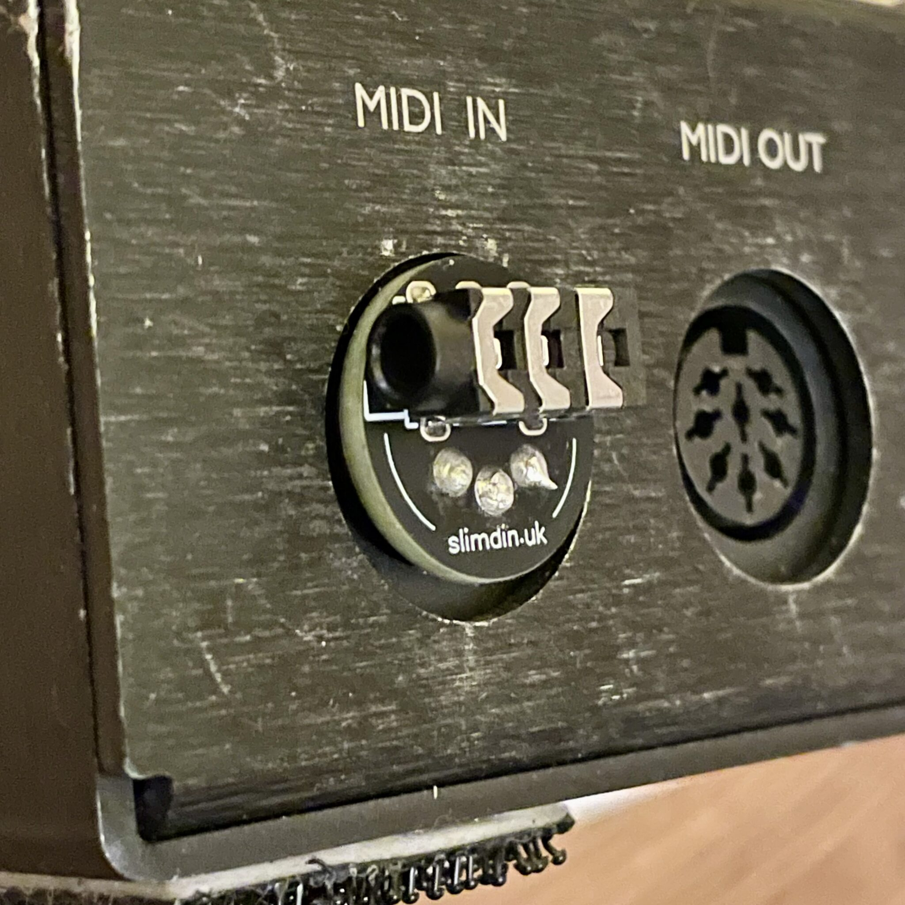

SlimDin Kit



Transform your MIDI setup with SlimDin. This ultra-low-profile 5-pin DIN to 3.5mm TRS jack adapter kit is designed for musicians and tinkerers who need maximum functionality in an exceptionally compact form factor.
Features
- Ultra-Compact Design: Streamline your setup with one of the smallest MIDI adapters available.
- DIY Assembly Kit: Comes with a precision PCB, three high-quality DIN pins, and a durable TRS socket for easy soldering.
- Configurable MIDI Standards: Choose between MIDI Type A or B by bridging clearly marked pads on the PCB.
- Optimize with TRS Cables: Use lightweight 3.5mm TRS cables for all your MIDI runs, reducing bulk and enhancing portability.
Why Only 3 DIN Pins?
SlimDin uses only 3 of the 5 DIN pins to achieve its ultra-compact design. These pins carry all the necessary MIDI signals—Ground, Current Source, and Current Sink—ensuring full compatibility with standard MIDI devices. By omitting the unused pins, SlimDin minimizes its footprint without sacrificing functionality.
What's in the Kit?
- 1x SlimDin PCB
- 3x High-quality DIN pins
- 1x 3.5mm TRS jack socket